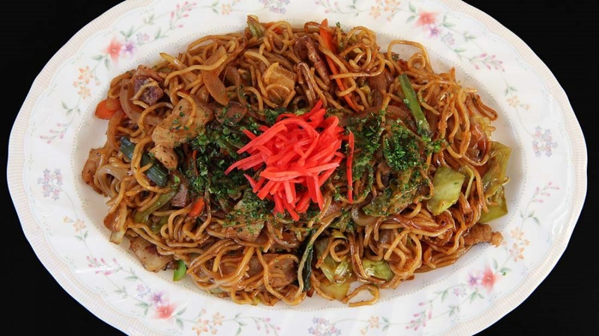

재료
소고기 100g, 양파 반개, 느타리버섯 약 30g, 대파 반에반줄, 계란 1개, 쯔유간장 2숟가락, 진간장1숟가락 후추 한번 톡 뿌리는양, 물(생수) 약 300ml, 밥한공기
조리법
- 가장 먼저 할일은 재료손질로 야채들을 세척후 양파와 대파는 얇게 썰어서 준비해주세요!
- 느타리버섯과 소고기는 먹기좋은 크기로 잘라서 준비해주세요!
- 모든 재료준비가 완료되면 후라이팬에 기름을 살짝 두르고 먼저 양파와 대파를 볶아주세요!
- 양파가 익어서 투명한 느낌의 살짝 흐물거리는 상태가되면 준비해놓은 소고기과 느타리 벗서을 모두 넣고 같이 섞어가며 볶아줍니다!
- 볶는 중간에 후추가루를 한번 톡 뿌려서 볶아주세요!
- 소고기가 갈색으로 익어가면서 다익힌 상태가 아닌 약70~80%정도 익은상태가 되면 물(생수) 300ml (종이컵 한컵반)을 부어서 재료들과 함께 끓여주세요!
- 먼저 진간장 1숟가락을 넣어주세요!
- 이어서 쯔유 간장 2숟가락을 넣어줍니다!
- 다음으로 설탕 한숟가락을 넣고, 익을때까지 기다려주세요!
- 끓이는 중간에 계란 한개를 넣고 노른자를 터뜨려서 국물에 살짝 풀어 주세요!
- 국물이 자작하게 졸아들으면 밥공기에 밥을넣고 그위에 조심스럽게 올려주세요!
재료
자숙문어 1컵, 대파 1/2뿌리, 가쓰오부시, 파래김 1스푼, 돈가스소스,마요네즈
조리법
- 부침가루(2컵)에 달걀(1개), 물(1.5컵)을 붓고 거품기로 섞어 반죽물을 만들고, 시판 판매되고 있는 타코야키 분말을 이용하셔도 좋아요.
- 자숙문어(1컵)을 준비하고 대파(1/2뿌리)는 잘게 다지고,
- 달궈진 타코야키 틀에 붓으로 기름칠해 코팅시키고.. 반죽물을 반정도 부어준 뒤 자숙문어, 잘게 썬 대파를 올려주세요
- 그 위로 반죽물을 듬뿍 부어주세요
- 가장자리가 익어갈때쯤.. 젓가락이나 뾰족한 이쑤시개로 가장자리 반죽을 모아 뒤집어 구워주고, 약한불에서 구워야 타지 않아요.
- 접시에 담아 마요네즈, 돈가스 소스를 지그재그로 뿌려준 뒤, 파래김, 덴가스, 가쓰오부시를 소복히 올려 마무리.

야키소바
재료
향신료: 간장 50ml 미림50ml 가쓰오부시 간장 25ml 굴소스 25ml 매실청 25ml 처트니 25ml(식초 2밥숟 대체) 생강술 1/2밥숟
야채 : 양파 반개(큰) 양배추 1/8(중) 느타리 버섯 반팩(작) 팽이버섯 반팩(작) 통마늘 5쪽(중) 대파 한뿌리
면 : 중화면 2인분(우동사리도 좋다)
고기 : 소고기 200g(호주산 척아이롤)
고명 : 가쓰오부시 파슬리가루
조리법
- 양파 반쪽을 먼저 준비한다. 얇은 속면을 분리한다. 분리한 속면을 다진다. 겉면은 볶기 좋은 크기로 손질한다.
- 먼저 소스를 만든다. 다져낸 양파 속면과 생강술 반밥숟, 청고추 홍고추를 다져 준비한다.
- 간장 1 : 미림 1 : 가쓰오부시간장 0.5 : 굴소스 0.5 : 매실청 0.5 : 처트니 0.5(레시피 하단 참조) 재료들을 접시에 담는다.
- 기름을 두르지 않은 팬에 양배추를 볶는다.
- 양배추 끝자락이 조금씩 타면 마늘을 넣어준다.
- 양파 끝자락이 살짝 타기 시작할 때 파를 넣는다. 이 때부터 불을 정말 세게 올려야 한다.
- 파가 살짝 죽기 시작할 때 버섯을 넣는다.
- 이후로는 유료 컨텐츠 입니다. 신한 110-452-423060 예금주: 남원모